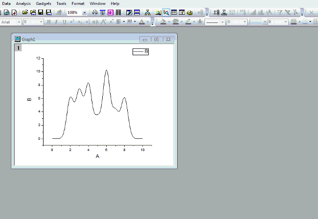
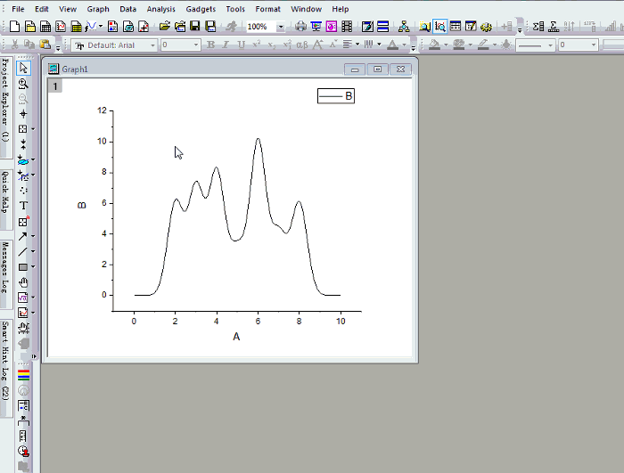

FAQ-624 選択した範囲の曲線下を塗りつぶすには？
fill-color-under-range
最終更新日: 2019/1/7
積分ガジェットを使用
- 積分ガジェットの新しい出力の後に影の色を保持するのオプションを使います。Note: この機能はOrigin 2018b以降で利用できます。
- >ボタンをクリックし、新しい出力を選択します。
- 影が追加されます。
- ROIを移動して新しい出力を選択という操作を繰り返して複数の影を追加できます。
- Xをクリックしてガジェットを閉じます。
- 塗りつぶし領域を選択して、スタイルツールバーで塗り色やパターンの編集が可能です。
- 
2016 SR1では、代わりにガジェットを閉じた後も影の色を保持するオプションでガジェットを閉じても影を表示します。一つの範囲のみ影を付けられます。
プロットを複製して複製プロットの部分範囲を塗りつぶす
Origin 2016以降、Originはプロットをコピー/貼り付けしてプロットを複製できます。つまり
- プロット操作・オブジェクト作成ツールバーの領域データセレクタツール
 をクリックして、プロットの範囲を選択します。ESCキーを押して選択モードを終了します。
をクリックして、プロットの範囲を選択します。ESCキーを押して選択モードを終了します。
- 範囲をクリックして選択し、Ctrl+Cを押してコピーします。
- Ctrl+Vでプロットします。
- グラフ上でダブルクリックして作図の詳細ダイアログを開き、左パネルで貼り付けたプロットを選択してグラフの線タブにある「曲線以下の塗りつぶし」のチェックをつけて希望の塗りつぶし方法を選択します。
Note: 塗りつぶし領域が下X軸を隠してしまうことがあります。X軸で右クリックしてプロットを軸に優先のチェックを外して軸を上に表示します。
- 
グラフに同じプロットを再度追加
Origin 2016より前の古い方法
- グラフにプロットの部分領域を追加するには、いくつかの方法があります。
- ワークシートのデータ範囲を選択してグラフにドラッグアンドドロップします。
- 最初にグラフへ列の全てををドラッグアンドドロップしてレイヤ内容ダイアログで範囲を編集します。
- レイヤ内容ダイアログで、列を選択してレイヤに移動して範囲を編集します。
- 作図のセットアップダイアログで、列をグラフに追加して範囲を編集します。
- グラフにプロットが追加されたら、作図の詳細ダイアログを開き、左側の部分領域を選択します。グラフの線タブで、曲線以下の塗りつぶしにチェックを付けます。
- パターンタブでは塗りつぶしの色やパターンを変更できます。
Note: 塗りつぶし領域が下X軸を隠してしまうことがあります。作図の詳細ダイアログのレイヤレベルを開きます。レイヤ表示方法タブのプロットを軸に優先にチェックを外します。X軸が表示されます。
キーワード:面積塗りつぶし, 分析マーカー, レイヤ管理, 作図のセットアップダイアログ